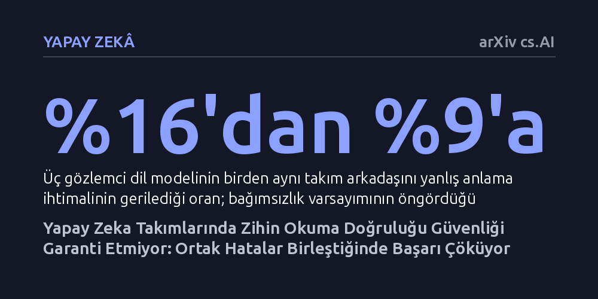

YAPAY-ZEKA · arXiv cs.AI · 2026-10-16
Araştırmacılar, çok etmenli yapay zeka sistemlerinde takım arkadaşlarının niyetlerini tahmin eden modellerin yalnızca doğruluk oranıyla onaylanmasının güvenli olup olmadığını inceledi. Tekil tahmin doğruluğunun ortak hataları ve hata maliyetlerini hesaba katmadığı, bu nedenle zararlı sistemleri onaylayıp faydalı olanları haksız yere eleyebildiği saptandı.
Bireysel olarak yüksek doğrulukla çalışan yapay zeka modellerinin bir araya geldiklerinde aynı kör noktalara düşerek birbirlerinin zararlı hatalarını büyütebileceğini gösterir.

Çok etmenli yapay zeka sistemlerinde koordinatörler, diğer ekip üyelerinin ne düşündüğünü veya bir sonraki adımda ne yapacağını tahmin etmek zorundadır. Literatürde buna 'Zihin Kuramı' denir. Geleneksel mühendislik yaklaşımı, bu zihin okuma modülünün tekil tahmin doğruluğunu ölçer ve yüksek bir doğruluk eşiğini güvenilirlik sertifikası olarak kabul eder.
Oysa araştırmacılar, doğruluk metriğinin iki temel nedenden dolayı yanlış bir güvence sunduğunu öne sürüyor. İlki, yanlış bir kararın bedelinin duruma göre değişmesidir; bir hatanın maliyeti göreve bağlı olduğundan onay eşiği modüle değil, sistemin çalıştığı göreve ait olmalıdır. İkincisi ve daha önemlisi, modellerin yaptığı hatalar birbirinden bağımsız değildir. Ortaklaşa yapılan ve aynı yöne sapan hatalar, özellikle birbirine kenetlenen görevlerde felakete yol açabilir.
Araştırmacılar bu teorik öngörüleri doğrulamak için yapay zekaların iş birliği yaptığı üç farklı ortam kullandı: görev atama simülasyonu, seviye tabanlı yiyecek arama ve bilgi saklamaya dayalı bir iş birliği kart oyunu olan Hanabi. Deneylerde yapay hata enjeksiyonları, özel eğitilmiş modüller, Bayesçi olasılık modelleri, insan kararları ve beş farklı büyük dil modeli (GPT-5.4-mini'den Claude Opus 5.5'e kadar) karşılaştırıldı.
Modellerin takım arkadaşlarının niyetlerine dair hatalarının bağımsız olup olmadığı ve bu hataların görev başarısını nasıl etkilediği incelendi. Ayrıca yazarlar, modülü doğrudan sahaya sürmeden hata maliyetlerini, ikili etkileşimleri ve ölçülen hata bağımlılıklarını fiyatlandıran 'Kör Nokta Geçidi' adlı yeni bir onay mekanizması tasarlayıp 20 farklı veri bölütünde ve önceden tescil edilmiş testlerle sınadı.
Elde edilen bulgular, geleneksel doğruluk ölçütünün her iki yönde de başarısız olduğunu gösterdi. Hataların zincirleme biriktiği Hanabi oyununda doğruluk ölçütü zararlı modellerin sahaya sürülmesine onay verdi; buna karşılık maliyetli hataların nadir görüldüğü görev atama senaryosunda ise faydalı modelleri haksız yere reddetti. Yani tekil doğruluk eşiği, her modül ve her görev için geçerli evrensel bir güvenlik standardı oluşturamadı.
Daha da çarpıcısı, modellerin daha yetkin hale gelmesinin takım düzeyindeki ortak kör noktaları tahmin edildiği kadar azaltmamasıydı. Dil modellerinde bireysel hata oranı yüzde 32'den yüzde 11'e düşse de, üç gözlemcinin birden aynı takım arkadaşını yanlış anlama olasılığı yalnızca yüzde 16'dan yüzde 9'a geriledi. İstatistiksel bağımsızlık varsayımı bu olasılığın yüzde 3,4'ten yüzde 0,15'e inmesini öngörüyordu; ancak modeller benzer yanılgılara ortaklaşa düştükleri için yedeklilik beklenen güvenliği sağlamadı.
Yazarların önerdiği 'Kör Nokta Geçidi', doğruluğun yetersiz kaldığı alanlarda kritik bir alternatif sunuyor. Model geliştirme verilerinde yapılan 20 bölütlük denemede doğruluk metriği bölüt başına ortalama 3,2 hatalı onay verirken, Kör Nokta Geçidi hiçbir önemli hatalı onay üretmedi. Ayrıca modelin hiç görmediği yedi sınıflandırıcı ve Bayesçi bir modül üzerinde yapılan testlerde de doğruluk ölçütünün onayladığı riskli sistemler başarıyla yakalandı.
Bu çalışma, otonom ekiplerde 'bireysel olarak ne kadar doğru' sorusunun yerini 'birlikte çalışırken hatalar nasıl birikiyor' sorusunun alması gerektiğini ortaya koyuyor. Fabrikalarda, trafikte ya da sağlıkta birden fazla yapay zeka etmeninin koordineli çalıştığı gelecekte, modelleri sadece tekil doğruluk testleriyle sahaya sürmenin gizli riskler barındırdığı açıkça görülüyor.